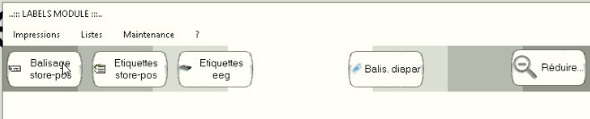
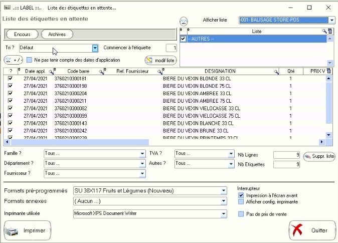

Lors de la validation des livraisons, store-pos crée aussi autant d'étiquettes que d'articles livrés
Pour ensuite imprimer les étiquettes
Gestion/Fiche/Etiquette/ ou etiq. direct.Lorsque l'on lance le module de balissage, on peut choisir chacune des listes dans les icones.
Il y a donc 4 listes de balisage:
Lorsque l'on a sélectionné l'une d'entre elle, on remarque que dans la fenêtre qui apparaît, on peut changer de liste en choississant en haut à droite (dans le cas ci-dessous, c'est la liste BALISAGE STORE-POS qui a été choisie.
Pour chacune des listes on peut modifier le nombre d'étiquettes à imprimer, toutefois, en pratique on ne multiplie le nombre d'étiquettes que pour le pain ou les produits sans étiquettes (miel, certaines bouteilles, etc)
Nous utilisons 4 formats